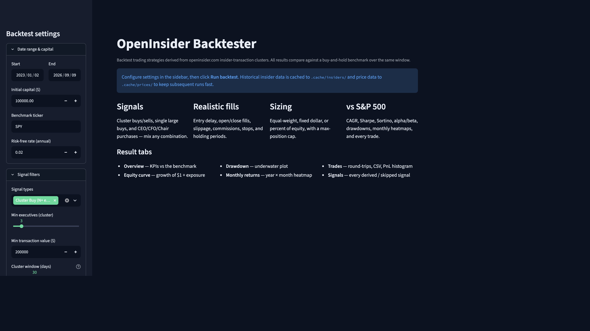
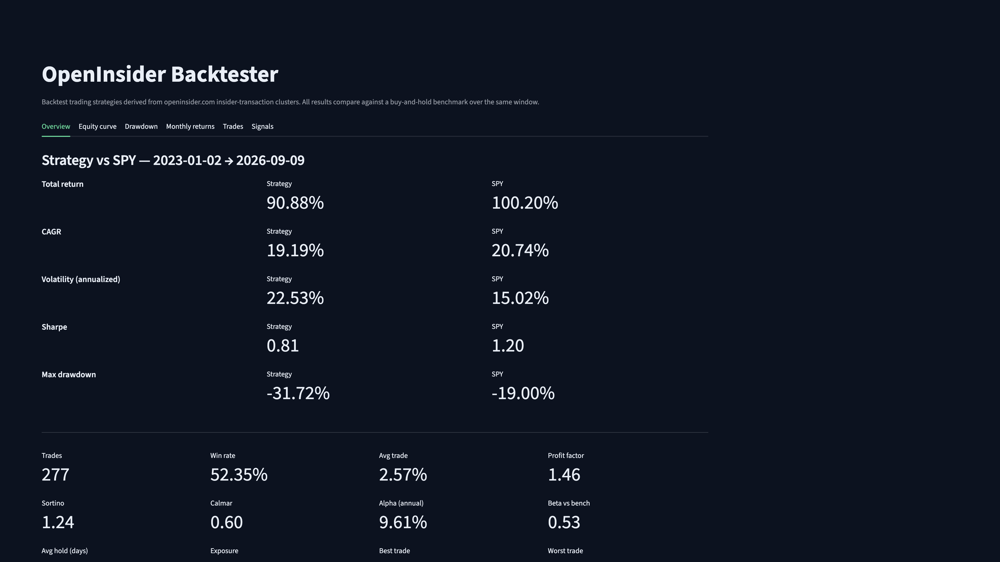
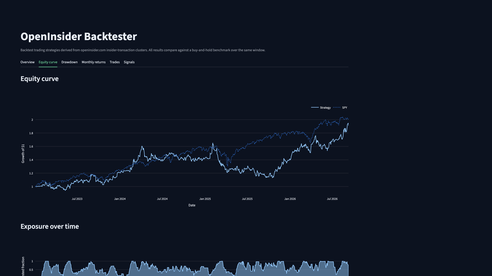
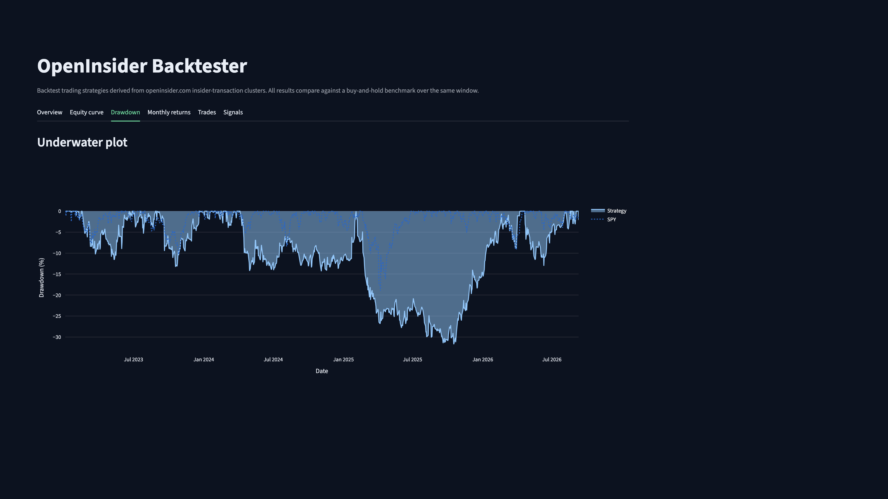

arno van eetvelde / projects / markets
Telegram alerts and a Streamlit backtester for clustered insider trades
Two tools that share one scraper of openinsider.com. A Telegram notifier polls every few hours and alerts when three or more executives at a company each buy or sell at least $200k. A Streamlit backtester replays those signals against configurable strategy rules and compares equity to the S&P 500.
Alerts are deduplicated for 24 hours. The backtest below runs the default cluster-buy rule from January 2023 to today against buy-and-hold SPY.




Insider Cluster Alert — Apple Inc. (AAPL) — 4 executives
2024-03-15 Tim Cook (CEO) BUY $2.45M
2024-03-14 Luca Maestri (CFO) BUY $890,000
2024-03-12 Jeff Williams (COO) BUY $1.20M
2024-03-11 Kate Adams (GC) BUY $320,000
total $4.86M · deduplicated 24hPython · Streamlit · Telegram Bot API